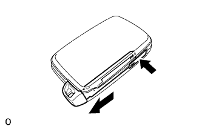
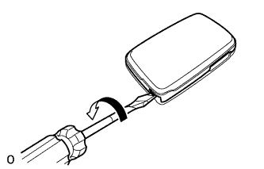
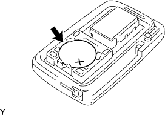

ПЕРЕДАТЧИК СИСТЕМЫ УПРАВЛЕНИЯ ЗАМКАМИ ДВЕРЕЙ (для моделей с системой посадки и запуска) > СНЯТИЕ |
| 1. ИЗВЛЕКИТЕ БАТАРЕЮ ПЕРЕДАТЧИКА |
|  |
Нажмите рукоятку защелки отпускания и извлеките запасной ключ.
|  |
Вставьте отвертку в щель и поверните ее, чтобы отсоединить крышку корпуса передатчика.
|  |
Извлеките батарею (литиевая батарея: CR1632).